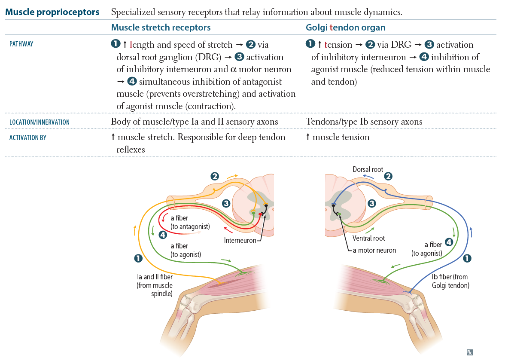
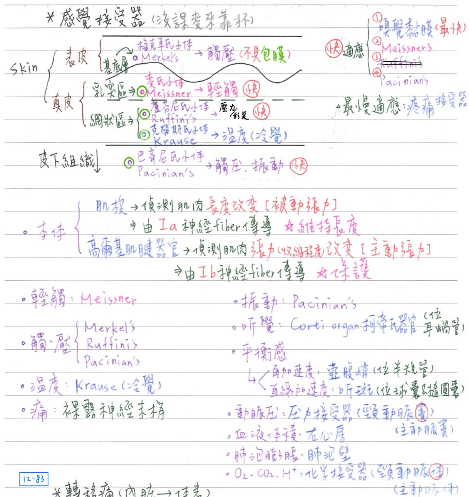
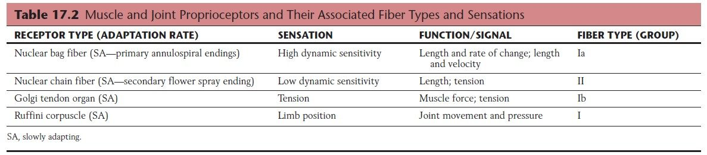
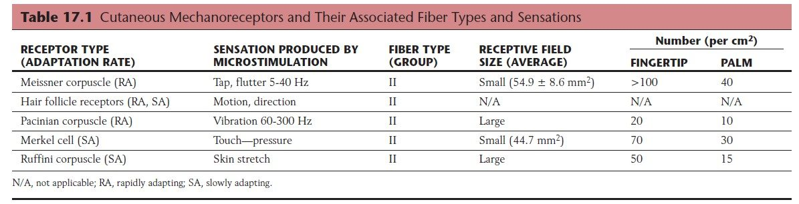
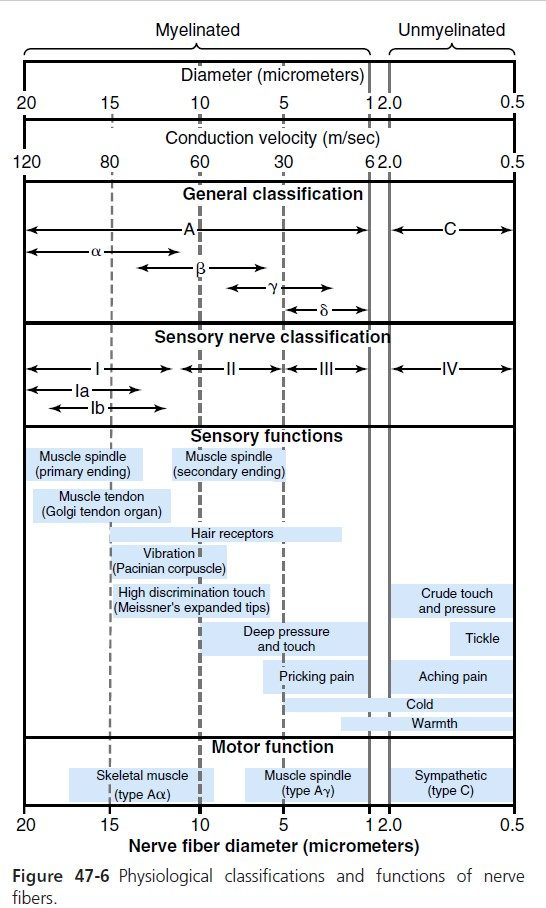
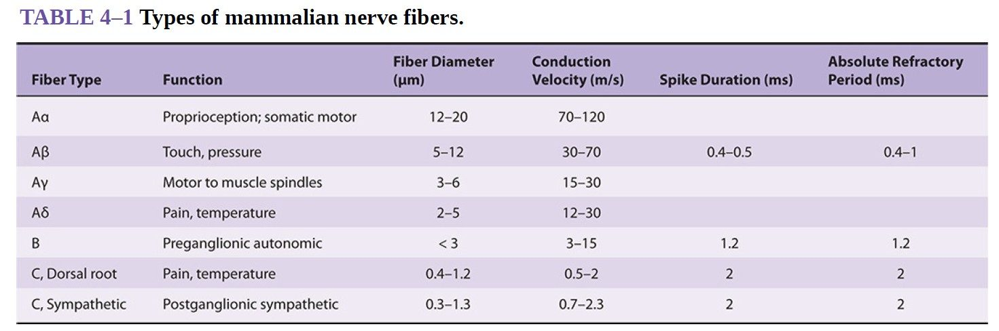
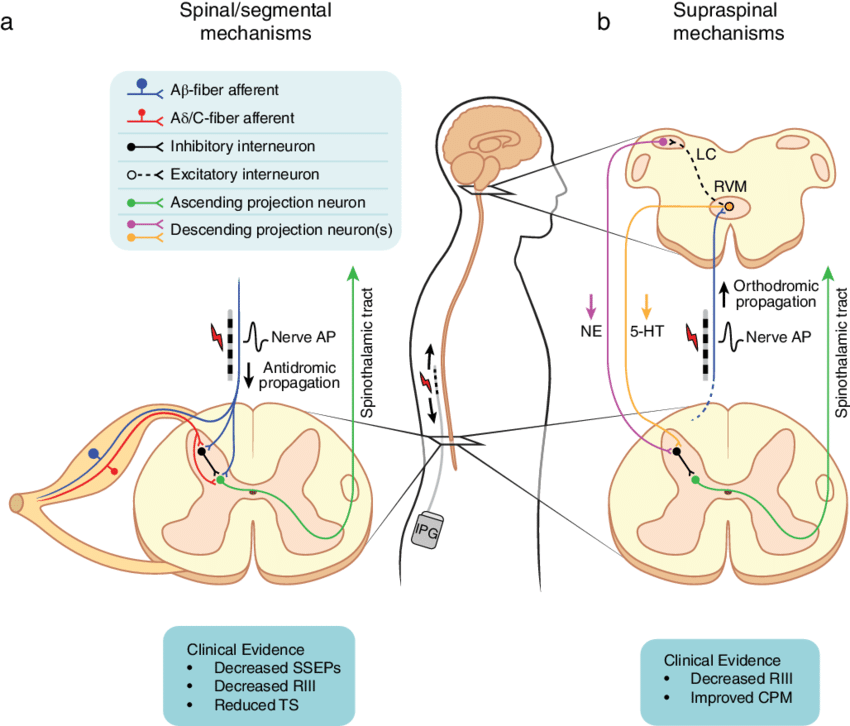
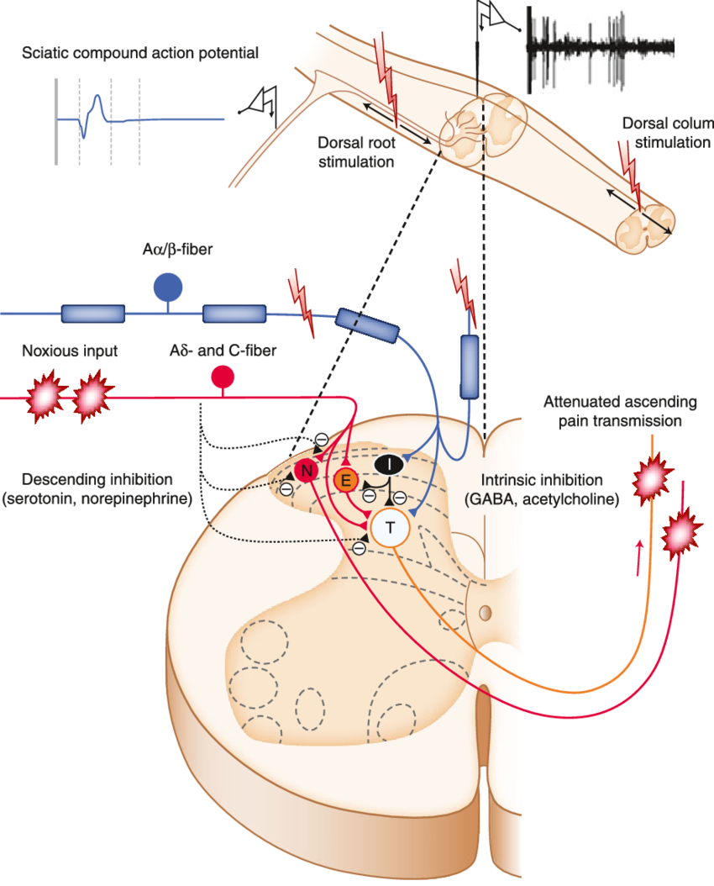
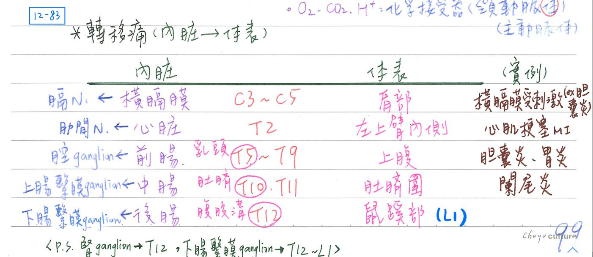
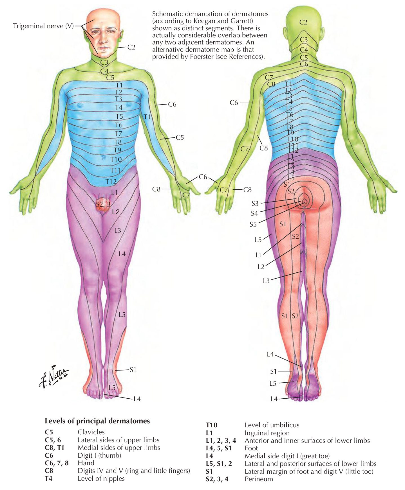

🧐 感覺路徑-感覺接受器&一般感覺
[必考]感覺接受器(sensory receptor)
分類(classification)：依刺激(stimulus)性質區分
- 具包膜：(Meissner)、(Pacinian's)、(Ruffini’s)、(Krause)等
- 不具包膜(capsule)：牟克耳氏小體(Merkel's)
備註
- 不知道light touch等不等於neuroscience中描述的tap??
(下方截圖表格)
- 某年的楊明詳解：趙老的light touch=兩點間鑑別觸覺
機械性(mechanoreceptor) [這邊也是每本都有自己的說法...]
| 刺激性質 | 受器名稱 | 位置 | 功能 |
|---|---|---|---|
| 輕觸覺 (light touch) | 牟克耳氏小體(Merkel's) =牟克耳民細胞/神經末稍終盤 [hint：地下室很沉默&黑 →Merkel’s和melanocyte都在基底層] | 位於★表皮之基底層 (不具包膜) 手指最豐富 | 觸、壓 |
| 麥氏小體(Meissner) [hint：Miss有乳頭] | ★真皮乳頭區 (具包膜) | 輕觸覺 | |
| 觸、壓 | 巴齊尼氏小體(Pacinian's) [hint：P開頭→pressure] | 深層真皮網狀區& 皮下組織 (具包膜) | 深部觸、壓&振動覺 |
| 盧芬尼氏小體(Ruffini’s) | 真皮網狀區 (具包膜) | 觸、壓、牽引(stretch) | |
| 本體感覺 | 肌梭(muscle spindle)感覺神經末梢 | 偵測肌纖維的長度(被動張力) →由Ia神經纖維傳導 | |
| 高爾基肌腱器官 (Golgi tedon organ) | 肌腱 | 偵測肌維的收縮程度(主動張力) →由Ib神經纖維傳導 | |
| 神經末梢/關節囊接受器 | 關節囊 | 偵測關節位置 | |
| 振動感 | 神經末梢/巴齊尼小體(Pacinian's) | ||
| 聽覺 | 毛細胞 柯帝氏器官(Corti organ) | 位耳蝸管 | |
| 平衡感 | 毛細胞/壺腹嵴 | 半規管 | 動態平衡/角加速度 |
| 毛細胞/聽斑 | 球囊、橢圓囊 | 靜態平衡/直線加速度 | |
| 動脈壓 | 神經末梢/壓力接受器 | 頸動脈竇 主動脈竇 | 壓力反射(baroreflex)：調節BP |
| 血液體積 | 神經末梢/體積接受器 | 右心房 中心靜脈 | 本橋氏反射(Bainbridge reflex)：volume上升→心輸出上升 |
| 肺泡膨脹 | 神經末梢/張力接受器 | 肺泡壁 | 亨鮑二氏反射(Hering-Breuer reilex) →抑制肺泡過度膨脹[防破裂] |
- 肌梭感覺神經末梢：引發伸張反射(stretch reflex)：
肌肉伸長(strech)→肌肉縮短(constraction)[維持長度恆定]
- 高爾基肌腱器官：引發逆伸張反射(inverse stretch reflex)：
肌肉過度伸長(strech)→肌肉舒張(relaxation)[保護作用]

溫度性(thermoreceptor)、傷害性(nociceptor)、
電磁性(electromagnetic)、化學性(chemical)
| 刺激性質 | 受器名稱 | 位置 | 功能 |
|---|---|---|---|
| 冷覺 | 神經末梢 克勞斯氏小體(Krause) | 真皮網狀區 (具包膜) | |
| 熱覺 | 神經末梢/熱接受器 | ||
| 痛覺 | 裸露神經末梢 (free/naked nerve ending) | ||
| 視覺 | 錐細胞、桿細胞 | 視網膜 | |
| 味覺 | 味細胞 | 味蕾 | |
| 嗅覺 | 嗅細胞 | 嗅覺黏膜 | |
| O2, CO2, H+ | 化學接受器 | 頸動脈體、主動脈體 延腦 | 啟動化學反射(chemoreflex) |

適應(adaptation)
- 定義：給予接受器一固定強度且連續的刺激，其產生動作電位的頻率隨時間而遞減；此現象稱適應，又稱去敏感化(desensitization)
| 適應快慢 | 受器名稱 |
|---|---|
| 快適應 (phasic receptor) [hint：怕死就沒事] | 巴齊尼氏小體(Pacinian)：觸、壓 麥氏小體(Meissner)：輕觸覺 嗅覺黏膜：嗅覺(最快適應) |
| 慢適應 (tonic receptor) | 其他接受器 最慢適應：疼覺接受器(保護作用) |


題外話：神經纖維分類補充[教科書大亂鬥]


一般感覺(general sensation)
- 一般軀體感覺(GSA)原則：
- 傳至對側大腦皮質：需三個神經元，
- 傳至同側小腦皮質：需二個神經元
體感覺神經路徑(GSA pathway)：3條pathway
- 引起痛覺的物質：bradykinin、prostaglandin、5-HT、K+、H+
- 各種弓形束總整理：
- 弓形束(arcuate fasciculs))：左顳葉(魏氏區Wernicke, 22)←→左額葉(布氏區Broca, 44/45)
- 內弓形束(int. arcuate)：薄核、楔形核交叉至對側丘腦→內緣蹄系
- 前外弓形束(ext. arcuate)：弓形核至對側小腦(arcuatocerebellar tract)
- 後外弓形束(ext. arcuate)：外側/副楔形核至同側小腦(cuneocerebellar tract)
| 感覺種類 | 路徑 |
|---|---|
| 觸、壓 | 背根神經節→脊髓後角細胞(II,膠狀質)→ 經前灰質、白質交接(ant. gray& white commissure)交叉至對側前索 →前脊髓丘腦徑/脊髓蹄系→丘腦(VPL)→內囊/放射冠→大腦皮質(頂葉) |
| 溫、痛 | 背根神經節→脊髓後角細胞(II,膠狀質)→ 經前灰質、白質交接交叉至對側側索前側(齒狀韌帶腹側) →側脊髓丘腦徑/脊髓蹄系→丘腦(VPL)→內囊/放射冠→大腦皮質(頂葉) |
| 輕觸=二點區分觸覺 有意識本體感覺 振動感覺 | 背根神經節→薄束、楔形束→延腦之薄核、楔形核 →經內弓形束交叉至對側→內緣蹄系 →丘腦(VPL)→內囊/放射冠→大腦皮質(頂葉) |
| 無意識本體感覺 (皆到同側小腦) | 背根神經節→脊髓背核(Clark, VII)→後脊髓小腦徑→小腦 →前脊髓小腦徑→小腦 |
| 臉部一般軀體感覺 | 參照三叉神經感覺核及其路徑 |
- 脊髓半横斷症候群(Brown-Sequard syndrome)：
- 受損節段以上之感覺、運動功能均正常
- 受損節段以下：
- 同側輕觸覺、本體感覺、振動感覺消失→後柱(薄束、楔形束)受損
- 對側觸、壓、溫、痛感覺消失→前外側系統受損
- 同側運動功能(體輸出、內臟輸出)消失→痙攣性痲痺、血管舒張


一般內臟感覺(GVA)
- 內臟感覺可經原內臟輸出(ANS)路徑傳回中樞
EX：胃的感覺可經由交感神經路徑(大內臓N)或副交感神經路徑(迷走N)傳遞
- 依生理性質分類：
- 主要經交感神經：意識認知、需緊急應變、較強烈之刺激 [EX：胃炎引發劇痛→大內臓N]
- 主要經副交感神經：反射功能、休養生息、較隱鈍之刺激 [EX：胃飽足感→迷走N]
- 依解剖位置概述：
- 主要經交感神經：前腸、中腸
- 主要經副交感神經：後腸
疼痛(pain/nociception)
轉移痛(referred pain)
- 內臓(visceral)損傷，卻被認知為體表(somatic)疼痛
- 不會有體表轉到內臟的疼痛
- 原理：遵守皮節規則(dematomal rule)
- 聚合性(convergence)：體表及內臟的第一級神經元，經脊髓後角同一個第二級神經
元向上傳導(所以大腦會分不清楚是哪邊傳上來的)
- 聚合性(convergence)：體表及內臟的第一級神經元，經脊髓後角同一個第二級神經
- 常見範例：
- 闌尾炎(中腸)→臍圍(T10)
- 小内臓N(T10~T11)：上腸繫膜神經節(中腸)
- 右下腹疼痛(T12/L1)：闌尾炎刺激局部腹膜造成
- 膽囊炎(前腸)→上腹(T5~9)、右肩疼痛(C3~5)
- 大內臓N(T5~T9)：腔神經節(前腸)
- 右肩疼痛(C3~5)：膽囊炎刺激橫膈膜(膈N；C3~5)所引發
- 胃炎(前腸)→上腹(T5~9)
- 大內臓N(T5~T9)：腔神經節(前腸)
- 心臓損傷(T2)→★[106-1]左臂內側(T1)
備註
我看netter的圖左臂內側應該是T1
但查過資料是說T1~T4皆有可能產生轉移痛
- 腎、輸尿管損傷[EX：結石]→鼠蹊部(T12~L1)
備註
鼠蹊部的皮節不會只有T12(其實應該是L1為主)
- 最下內臟N(T12)：腎神經節
- 胰臟炎→後背
- 闌尾炎(中腸)→臍圍(T10)
疼痛分類
- 快速痛(fast pain)=尖銳痛(sharp pain)= 外側疼痛(lateral pain system)
- 定位性(localization)佳，速度較快(從刺激至感受約0.1秒)
- 由Aδ纖維傳導，經新脊髓丘腦徑(neospinothalamic tr.)[=側脊髓
丘腦徑]直達丘腦，再傳至大腦皮質(頂葉)
- 慢速痛(slow pain)=鈍性痛(dull pain)=內側疼痛(medial pain)
- ★定位性(localization)差，速度較慢(從刺激至感受約1.0秒)
- 由C纖維傳導，經舊脊髓丘腦徑(paleospinothalamic)[=脊髓網狀徑、脊髓頂蓋徑]等分傳至腦幹網狀結構之縫核、中腦頂蓋、中腦中央灰質、下視丘旁室核、丘腦等區域
內生性止痛途徑(endogenous analgesic pathway)
- 中腦中央灰質/★[110-1]導水管周圍灰質(periaquductal gray area)：分泌腦啡(enkephalin)、endorphine
- →★[110-2]橋腦縫核(raphe mags nucleus)：分泌血清張力素(serotonin)
- →脊髓後角(dorsal horn)之中間神經元：分泌腦啡(enkephalin)
- →突觸前抑制第一級神經元末稍(Aδ、C纖維)，使substance P釋放減少
→減少對脊髓後角細胞(第二級神經元)之興奮
★[110-2]脊髓背柱(dorsal column)的Aβ fiber可以傳遞抑制性訊息，抑制痛覺產生




📖 書本補充：與筆記不同或筆記沒寫到的地方
⚠️
以下為對照書本後整理，筆記原文未更動。書在這兩節與筆記沒有直接矛盾，以下是筆記沒寫到的細節。
頭部以下的一般體壁感覺（p.461–462）
- 書把兩條系統並排比較：
- 感覺類型：後柱—內側蹄系＝分辨性（精細）觸覺、本體感受、震動；脊髓丘腦徑（前外側系統）＝溫度、痛覺、一般（粗略）觸覺。
- 纖維直徑：後柱＝中大型；脊髓丘腦徑＝小型。
- 進入脊髓：後柱纖維較內側，進入後柱（側支與 Clarke 氏核形成突觸後發出脊髓小腦徑）；脊髓丘腦纖維較外側，進入背角（考題 111-1-5）。
- 脊髓內的排列（筆記只寫了後柱的部分）：後柱＝上肢在外側（楔狀束）、下肢在內側（薄束）；脊髓丘腦徑＝上肢在內側、下肢在外側（剛好相反）。
- 交叉位置：後柱在延髓（內弓狀纖維，交叉後匯成內側蹄系，111-2-1）；脊髓丘腦徑在腹側白質連合（不是背側，102-2-6）。
- 神經元：初級＝背根神經節；次級＝延髓的薄核和楔狀核／脊髓背角；三級＝丘腦 VPl。
- 皮質投射：感覺侏儒圖上下肢在最內側（後中央旁小葉），頭部在最外側。
- 書的提示：脊髓丘腦徑只是前外側系統的一部分，與脊髓中腦（脊髓四疊體）徑合稱脊髓蹄系（spinal lemniscus）。
- 考題補充：
- 楔狀核會發出內弓狀纖維交叉到對側；楔狀核小腦徑來自外側（副）楔狀核，不是楔狀核（107-1-13，與筆記一致）。
- 脊髓小腦徑傳無意識本體感受，與痛覺調控關聯最少；背柱—內側蹄系近年研究可能與內臟痛覺傳導有關（110-2-14 解析）。
頭部的一般體壁感覺：三叉神經感覺核（p.463–464）
- 三叉神經脊髓核：分成三個核；傳入纖維＝三叉神經脊髓徑；傳出纖維交叉到對側後加入脊髓丘腦徑；屬次級神經元（初級在三叉神經節）；相當於脊髓的背角；負責溫度和痛覺（特別是尾核 caudal nucleus）。
- 橋腦（主要感覺）核：在運動核外側；傳出纖維交叉者加入內側蹄系，未交叉者形成背側三叉神經徑；屬次級神經元；相當於脊髓的後柱；負責分辨性觸覺和本體感受。
- 中腦核：CNS 內唯一的偽單極神經元，屬初級神經元（相當於背根神經節的神經元）；傳入纖維＝三叉神經中腦徑；周邊突起加入 V3、中樞突起終止在三叉神經運動核，構成下頷反射（jaw-jerk reflex）；負責下排牙齒及牙齦、咀嚼肌的本體感受（105-2-5）。
- 書的提示：頭部的 GSA 都投射到丘腦的 VPm。
📝 書中歷屆考題（點選答案作答）
105-2-5p.464
咀嚼肌的本體感覺 (proprioception) 主要傳入下列核區？
107-1-13p.465
關於楔狀核 (cuneate nucleus) 之敘述，下列何者錯誤？
💡 楔狀核發出內弓狀纖維交叉到對側；楔狀核小腦徑來自外側楔狀核 (lateral cuneate nucleus)。
108-2-13p.465
精細觸覺主要由下列何種神經徑路傳導？
111-2-1p.465
下列何者由腦幹內的內弓狀纖維 (internal arcuate fibers) 交叉到對側之後匯聚形成？
111-1-5p.465
有關負責傳遞本體感覺 (proprioception) 的神經纖維，下列敘述何者最恰當？
💡 本體感受纖維比痛覺纖維粗，前者進入背側索、後者進入背角，故前者進入脊髓的位置較內側。
102-2-6p.466
下列有關脊髓丘腦徑 (spinothalamic tract) 的敘述，何者錯誤？
💡 脊髓丘腦徑是通過脊髓腹側的白質交叉。
110-2-14p.466
下列何構造與痛覺調控的關聯性最少？
💡 脊髓第二層與縫核脊髓徑分別是痛覺上傳與下行抑制的路線；脊髓小腦徑傳無意識本體感受，幾乎與痛覺無關。
110-2-2p.466
胸段右半邊脊髓損傷，可能造成下列何種症狀？
💡 震動覺走同側（後柱），痛覺走對側（前外側系統）；支配上肢的 C5–T1 在損傷處之上，不受影響。
112-1-5p.466
病人脊髓受損導致受傷部位以下本體感覺與震動覺喪失，但溫痛覺仍然保留，下列何者最可能為病人損傷的脊髓部位？
💡 後索負責本體覺及觸覺；前外側索內的前外側系統負責溫度和痛覺。